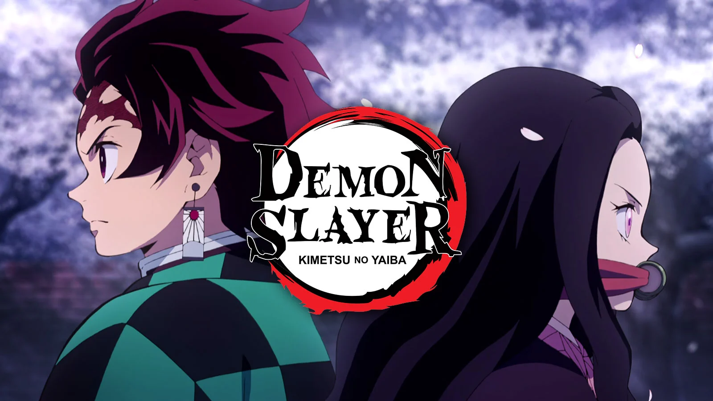

Demon Slayer
Informações sobre a série:
Demon Slayer é uma série de anime/mangá criada por Koyoharu Gotouge. A história se passa no Japão Taisho e segue Tanjiro Kamado, um jovem que se torna um caçador de demônios após sua família ser massacrada por demônios, e sua irmã Nezuko ser transformada em um demônio. A premissa básica gira em torno de Tanjiro procurando uma cura para Nezuko e vingança contra os demônios que destruíram sua família.Temporadas:
A série conta com 2 temporadas, a primeira foi extremamente bem recebida por sua animação de alta qualidade, trilha sonora envolvente e personagens cativantes. O estúdio Ufotable foi responsável pela animação, e seu trabalho meticuloso foi elogiado por fãs e críticos. A primeira temporada cobre o "Arco da Montanha" do mangá.